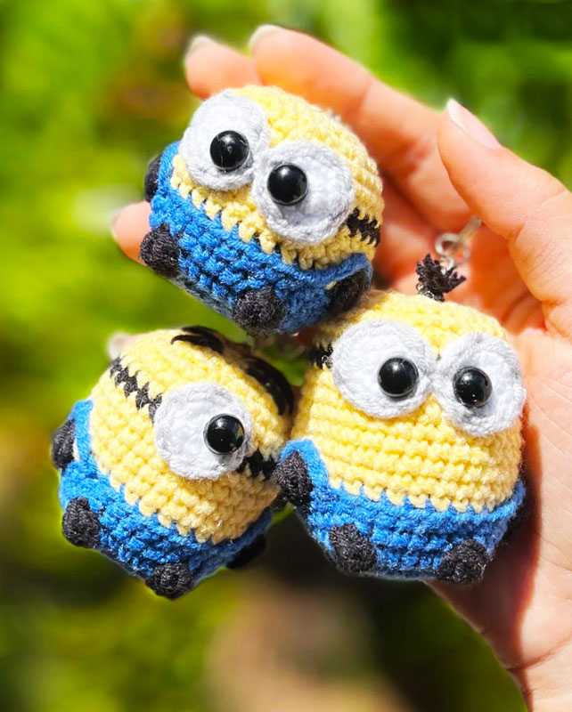
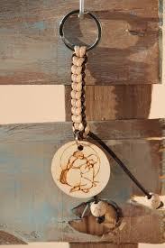

Asista a eventos y mercados locales : Los mercados, ferias y eventos comunitarios locales son una excelente manera de conocer a los clientes en persona. Esta interacción directa le permite forjar relaciones, obtener retroalimentación y concretar ventas inmediatas. Además, es una excelente manera de presentar sus llaveros al público local.
Que todos tus días sean alegres como la mañana de navidad.

